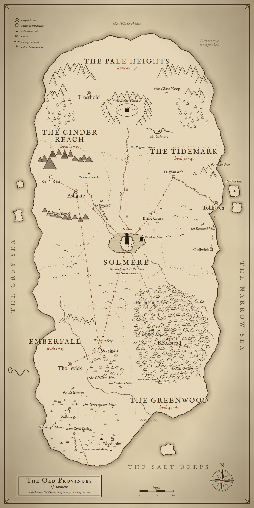

The Old ProvincesThe Hollow Vale

The Cinder Reach, Solmere, the Tidemark and the Heights
the roads north open from level 15
the Greenwood
opens at 45
★
Saltmere
Saltmere
the Greywater Fens · waystation · ★ Fog on the Canal
The Guild's coach
a day on the road · 10 gold